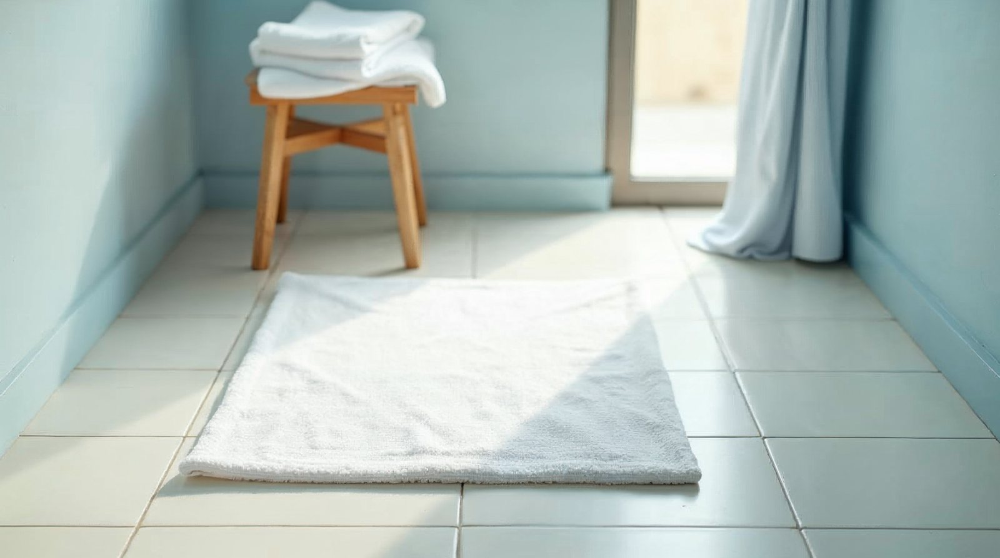
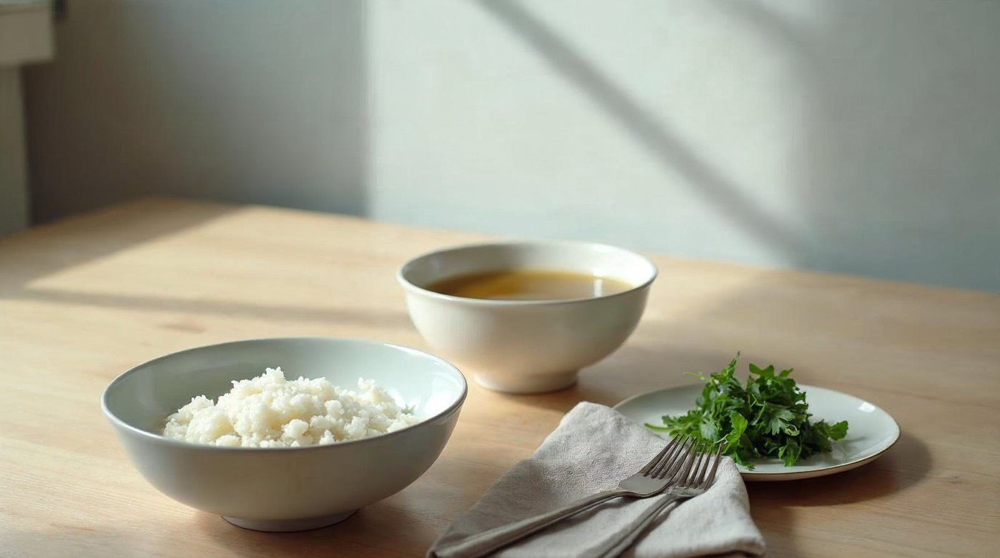
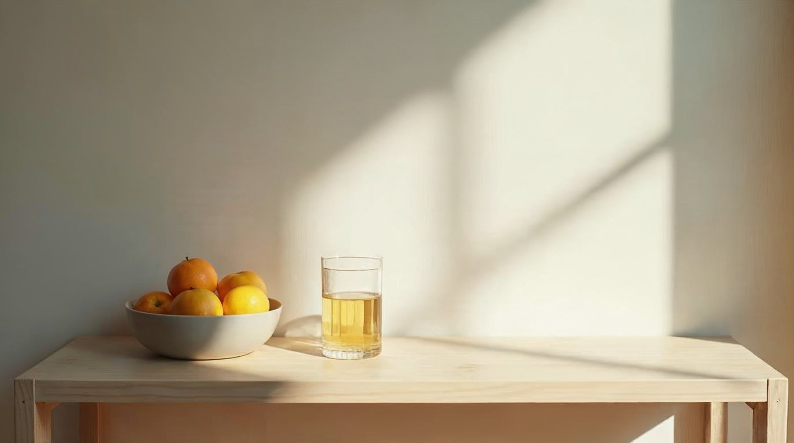
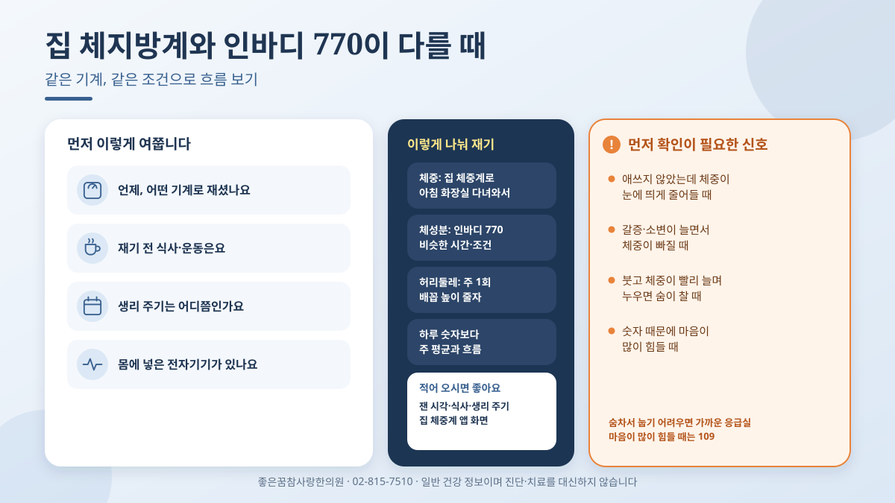

이종호 한의사 감수좋은꿈참사랑한의원 대표원장 (한의사 면허번호 19769)발행 2026-11-27 · 수정 2026-11-27
이 글의 차례
새해를 한 달 앞두고 마음먹고 산 스마트 체중계가 있습니다. 아침마다 화장실에 다녀와 올라서면 휴대폰 앱에 체중과 체지방률, 근육량이 그래프로 쌓입니다. 2주 동안 저녁을 가볍게 먹었더니 체지방률이 조금씩 내려가는 것 같아 뿌듯했습니다. 그런데 한의원에서 인바디를 재 보니 체지방률이 집에서 본 숫자보다 꽤 높게 나옵니다. 근육 숫자는 더 이상합니다.
집에서는 넉넉하게 나오던 근육량이, 결과지에는 그보다 한참 작은 골격근량으로 찍혀 있습니다. 그 종이를 들고 진료실에 들어오시는 얼굴에는 그동안 뭘 한 건가 하는 허탈함이 그대로 묻어 있습니다.
진료실에서 결과지를 펼치면 가장 먼저 나오는 말이 이겁니다. "원장님, 집 체중계랑 너무 달라요. 어느 게 맞는 거예요?" 몇 주 동안 저녁을 참고 계단을 오르며 쌓아 온 숫자가 한순간에 흔들리면 맥이 빠지는 게 당연합니다. 어떤 분은 집 체중계가 고장 났다고 하시고, 어떤 분은 반대로 한의원 기계를 의심하십니다. 그 마음이 이해됩니다.
숫자를 믿고 애써 온 시간이 있으니까요.
제 대답은 이렇습니다. 둘 중 하나가 틀렸다기보다, 서로 다른 방식으로 잰 숫자라 처음부터 그대로 견주기 어렵습니다. 그래서 저는 기계끼리 숫자를 맞춰 보기보다 같은 기계로, 같은 조건에서, 몇 주의 흐름을 보시라고 말씀드립니다. 체중은 집에서 매일 같은 때에 재고, 체성분은 인바디 770으로 비슷한 조건을 맞춰 일정 간격으로 재는 식입니다.
그렇게 나눠 두면 숫자 하나에 하루 기분이 오르내리는 일이 줄어듭니다.
왜 기계마다 숫자가 다를까요
두 기계 모두 몸에 아주 약한 전류를 흘려 그 흐름을 재는 방식입니다. 물이 많은 근육은 전기가 잘 흐르고, 지방은 덜 흐릅니다. 기계는 그 저항값에 키와 체중, 나이, 성별을 넣어 체지방과 근육을 계산해 냅니다. 말하자면 몸속을 직접 들여다보는 게 아니라, 전기가 지나간 길을 보고 추정하는 셈이지요.
그러니 전기가 어느 길로 지나갔는지, 어떤 계산식을 썼는지에 따라 숫자가 달라질 수밖에 없습니다.
집 체지방계는 대개 발판에만 전극이 있어서, 전류가 한쪽 발에서 다른 쪽 발로 주로 다리와 아랫배를 지나갑니다. 팔과 가슴 쪽은 직접 재지 못하고 다리에서 얻은 값을 바탕으로 짐작합니다. 인바디 770은 맨발로 발판 전극을 밟고 두 손으로 손잡이 전극을 함께 잡아 팔과 다리, 몸통을 나누어 잽니다.
같은 사람이 같은 날 재도 두 기계의 숫자가 다르게 나오는 첫 번째 이유입니다.
두 번째 이유는 항목의 이름입니다. 이름은 비슷한데 담고 있는 범위가 다른 경우가 많습니다. 인바디 결과지의 골격근량은 팔다리와 몸통을 움직이는 근육만 따로 추린 값입니다. 반면 집 체지방계 앱의 근육량은 몸의 수분과 장기처럼 지방이 아닌 부분을 넓게 묶어 계산하는 경우가 많아서, 골격근량보다 훨씬 큰 숫자로 나옵니다.
근육이 반으로 줄어든 게 아니라, 처음부터 다른 것을 잰 숫자인 셈입니다.
세 번째는 재는 조건입니다. 몸속 수분은 하루에도 여러 번 바뀝니다. 아침 공복에는 몸이 조금 말라 있고, 식사와 물을 마신 뒤나 짠 음식을 먹은 다음 날에는 수분이 늘어납니다. 운동이나 사우나로 땀을 흘린 직후, 손발이 꽁꽁 언 채 바로 잰 경우, 생리 전후에도 숫자가 흔들립니다.
집에서는 아침 공복에, 한의원에서는 퇴근길 저녁에 재셨다면 같은 몸이라도 이미 다른 조건에서 잰 것입니다. 두꺼운 겨울옷과 주머니 속 휴대폰 무게도 체중에 그대로 더해지고요.
하나 더, 체지방률은 체중 가운데 지방이 차지하는 비율입니다. 그래서 지방은 그대로인데 몸의 수분이나 근육이 줄면 비율은 오히려 올라가고, 물을 많이 마신 날에는 내려가 보이기도 합니다. 결과지를 볼 때 체지방률 한 칸만 보지 마시고 체지방량, 곧 지방의 무게를 함께 보시라고 권하는 이유입니다.

이런 분들을 자주 뵙습니다
새해 다이어트를 미리 시작한 직장인분들이 집 체중계 그래프를 휴대폰으로 보여 주시는 일이 많습니다. 매일 아침 숫자가 오르내리는 걸 보며 하루 기분이 정해진다고 하십니다. 저는 그래프의 하루하루보다 주 평균을 보자고 말씀드립니다.
월요일부터 일요일까지 일곱 번 잰 체중을 더해 일곱으로 나눈 숫자가 지난주보다 어떤지, 그것만 보셔도 마음이 한결 덜 흔들립니다.
근력 운동을 시작한 지 한 달쯤 된 분들은 근육 숫자에 예민하십니다. 집 체지방계의 근육량은 그대로인데 인바디에서는 골격근량이 조금 늘었다거나, 그 반대라거나. 근육은 몇 주 만에 눈에 띄게 늘기 어렵고, 그 사이에는 몸의 수분 변화가 숫자를 더 크게 흔드는 경우가 많습니다.
이런 분께는 숫자와 함께 계단을 오를 때 숨이 덜 차는지, 같은 무게를 드는 게 수월해졌는지 같은 몸의 느낌도 적어 보시라고 권합니다.
생리 주기에 따라 체중이 오르내려 속상해하시는 분도 많습니다. 생리 전 며칠은 몸에 수분이 고여 체중이 늘었다가 생리가 끝나면 다시 빠지는 흐름이 흔합니다. 이런 분께는 비교할 때 주기의 비슷한 날끼리 견주어 보자고 말씀드립니다. 이번 달 생리가 끝난 뒤 사흘째와 지난달 생리가 끝난 뒤 사흘째처럼요.
자녀가 사 드린 스마트 체중계를 매일 쓰시는 어르신들도 계십니다. 어르신들은 체지방률보다 근육량 숫자가 줄었다며 걱정하시는 일이 많습니다. 저는 숫자보다 요즘 입맛과 하루에 걷는 양, 계단을 오를 때의 다리 힘을 먼저 여쭙고, 필요하다고 판단되면 인바디 770으로 팔과 다리의 근육을 나누어 확인합니다.
그리고 끼니마다 단백질 반찬이 한 가지씩 들어가는지 함께 살핍니다.

이렇게 나눠서 재 보세요
체중은 집 체중계에 맡기시면 됩니다. 아침에 일어나 화장실을 다녀온 뒤, 아무것도 먹고 마시기 전에, 가벼운 옷차림으로 재세요. 체중계는 카펫이나 푹신한 매트가 아닌 단단하고 평평한 바닥에 두고, 늘 같은 자리에서 잽니다. 발바닥이 젖어 있거나 지나치게 건조하면 체지방 숫자가 흔들릴 수 있으니 맨발을 가볍게 닦고 올라서세요.
하루 숫자보다 주 평균을 적어 두는 것이 요령입니다.
회식이나 짠 국물을 먹은 다음 날 아침, 체중이 훌쩍 늘어 있어 놀라신 적이 있을 겁니다. 하룻밤 사이에 지방이 그만큼 붙기는 어렵습니다. 대개는 짠 음식과 술 때문에 몸에 물이 잠시 고인 것이라, 물을 충분히 마시고 평소처럼 지내면 며칠 사이 제자리로 돌아오는 경우가 많습니다.
이런 날은 체지방 숫자도 크게 흔들리니, 그날 숫자 옆에는 메모만 남겨 두고 마음은 내려놓으셔도 됩니다.
체중계를 새로 바꾸셨다면 그날부터 기록을 새로 시작하세요. 예전 체중계로 쌓은 그래프에 새 체중계 숫자를 그대로 이어 붙이면, 몸은 그대로인데 선이 뚝 끊기거나 튀어 보일 수 있습니다. 바꾸기 전 며칠 동안 두 체중계에 번갈아 올라서서 둘 사이의 차이를 적어 두면 이어 보기가 한결 수월합니다.
체성분은 인바디 770으로, 비슷한 조건을 맞춰 일정 간격으로 재는 편이 비교하기 좋습니다. 지난번과 비슷한 시간대에 오시고, 측정 두세 시간 전에는 과식을 피하며, 운동이나 사우나는 측정 뒤로 미룹니다. 도착하면 잠시 앉아 숨을 고르고 화장실을 다녀온 뒤, 시계나 반지 같은 금속을 빼고 맨발로 올라섭니다. 두꺼운 외투는 벗고, 주머니는 비워 두세요.
여기에 줄자 하나를 더하시길 권합니다. 일주일에 한 번, 아침 공복에 배꼽 높이에서 숨을 편하게 내쉰 상태로 허리둘레를 잽니다. 줄자는 기계마다 다른 계산식이 끼어들 틈이 없어서, 생활이 바뀌는 흐름을 꽤 정직하게 보여 줍니다. 즐겨 입는 바지가 허리에서 어떻게 느껴지는지도 함께 적어 두세요.
그리고 숫자를 보는 기간을 정해 두세요. 저는 적어도 한 달 넘게 모인 흐름을 보자고 말씀드립니다. 그 사이 하루 이틀 숫자가 튀는 것은 대개 수분 때문입니다. 스스로 이렇게 물어보셔도 좋습니다. 나는 매번 같은 기계, 같은 시간대에 재고 있나? 재기 전에 먹고 마신 것과 운동, 생리 주기를 적어 두고 있나?
서로 다른 기계의 숫자를 그대로 견주고 있지는 않나? 숫자만 보느라 잠과 식사는 놓치고 있지 않나?
심장박동기처럼 몸에 넣은 전자 의료기기가 있거나 임신 중이라면, 집 체지방계의 체지방 측정 기능도 쓰지 않는 것이 일반적인 안내입니다. 체중계 설명서를 먼저 확인하시고, 한의원에서도 인바디를 재기 전에 꼭 알려 주세요.

얼마나 지켜보고, 언제 진료를 받을까요
생활을 바꾼 뒤 한두 주 사이 숫자가 들쭉날쭉한 것은 흔한 일입니다. 같은 조건으로 한 달쯤 재 보았는데 체중과 허리둘레가 어느 쪽으로도 움직이지 않아 지치셨다면, 식사와 잠, 활동을 함께 정리해 보는 상담을 받아 보세요. 숫자 때문에 하루 기분이 크게 오르내리거나 먹는 일 자체가 괴로워졌다면, 그때도 혼자 버티지 않으셨으면 합니다.
다음과 같은 경우에는 숫자를 지켜보기보다 먼저 병원 진료를 받으세요.
- 애쓰지 않았는데 몇 달 사이 체중이 눈에 띄게 줄어드는 경우
- 갈증과 소변량이 크게 늘면서 체중이 빠지는 경우
- 며칠 사이 체중이 빠르게 늘고 다리가 눌린 자국이 남을 만큼 붓거나, 누우면 숨이 찬 경우
- 한쪽 다리만 붓고 아프며 열감이 있는 경우
- 먹고 일부러 토하는 일이 되풀이되거나, 체중 숫자 때문에 마음이 많이 힘든 경우
숨이 차서 눕기 어렵거나 가슴이 아프다면 지체하지 말고 가까운 응급실로 가세요. 먹는 문제나 숫자 때문에 마음이 많이 힘들 때는 ☎ 109로 바로 전화해 이야기를 나눌 수 있습니다. 복용 중인 약은 처방한 의사와 상의 없이 줄이거나 끊지 않습니다.
좋은꿈참사랑한의원에 처음 오시면
처음 오시면 체중이 언제부터, 어떻게 달라졌는지와 하루 식사 시간, 잠, 활동량, 드시는 약과 영양제를 먼저 여쭙니다. 집 체중계 앱의 그래프가 있다면 휴대폰으로 보여 주셔도 좋습니다. 숫자 자체보다 언제 재셨는지, 그 무렵 생활이 어땠는지를 같이 읽습니다.
그다음 잠시 숨을 고르신 뒤 맥을 짚습니다. 맥을 짚는 동안 몸이 찬 편인지 더운 편인지, 소화와 대소변은 편한지 여쭙고, 필요하다고 판단되면 혀와 배도 살핍니다. 이어서 인바디 770으로 체성분을 재고, 측정 시각과 마지막 식사, 운동 여부, 생리 주기를 결과지 옆에 함께 적어 둡니다.
검진에서 혈당 이야기를 들으셨다면 필요하다고 판단될 때 당화혈색소 검사기나 혈액 검사기(마인드레이·PT10)로 일부 항목을 확인하기도 하고, 더 자세한 검사가 필요하면 다른 의료기관을 안내합니다. 측정 비용과 보험 적용 여부는 방문 전 전화로 확인해 주세요.
결과지 숫자만큼 제가 귀 기울이는 것은 체온, 소화, 수면, 배설 네 가지입니다. 이 네 가지는 검사 수치로 다 드러나지 않을 때가 많지만, 체중이 왜 그 방향으로 움직이는지 이해하는 데 귀한 단서가 됩니다. 잠이 모자란 주에는 식욕이 흔들리고, 변비가 이어지면 아침 체중도 묵직해지니까요.
결과지를 볼 때는 체지방률 한 칸보다 팔과 다리의 근육이 어떻게 나뉘어 있는지, 지난번과 같은 조건에서 어느 쪽으로 움직였는지를 같이 봅니다. 그 내용을 바탕으로 식사와 잠, 걷기 같은 생활 계획과 필요하면 한약 상담을 함께 정합니다. 오실 때 최근 건강검진 결과지와 일주일 동안의 식사 시각 메모를 챙겨 오시면 이야기가 훨씬 빨라집니다.
다시 오시면 지난번과 같은 조건을 맞춰 재고, 그사이 해 보기로 한 것을 어떻게 지내셨는지부터 이어서 여쭙습니다.
마치며
숫자는 정직한 것 같지만, 어떤 기계로 언제 쟀느냐에 따라 얼굴을 바꿉니다. 몇 주 애쓴 마음이 숫자 하나에 꺾이는 일은 없었으면 합니다. 기계가 다르면 숫자가 다른 게 당연하고, 그보다 오래 남는 것은 끼니를 챙기고 일찍 잠자리에 들고 계단을 한 층 더 오른 그 생활입니다.
내일 아침에는 체중계 숫자 옆에 어젯밤 잠든 시각을 한 줄 적어 보세요. 다음에 오시면 그 기록과 결과지를 나란히 놓고, 숫자가 어떤 생활을 따라 움직였는지부터 함께 보겠습니다.
함께 읽으면 좋은 글
- 인바디를 두 번 쟀을 때, 두 결과지는 어떻게 나란히 비교하나요?
- 인바디는 아침에 재는 게 좋을까요, 저녁에 재는 게 좋을까요?
- 체중이 매일 달라지는 것은 정상인가요?

왜 기계마다 숫자가 다를까요
- 두 기계 모두 몸에 아주 약한 전류를 흘려 그 흐름을 재는 방식입니다.
- 물이 많은 근육은 전기가 잘 흐르고, 지방은 덜 흐릅니다.
이런 분들을 자주 뵙습니다
- 새해 다이어트를 미리 시작한 직장인분들이 집 체중계 그래프를 휴대폰으로 보여 주시는…
- 매일 아침 숫자가 오르내리는 걸 보며 하루 기분이 정해진다고 하십니다.
이렇게 나눠서 재 보세요
- 체중은 집 체중계에 맡기시면 됩니다.
- 아침에 일어나 화장실을 다녀온 뒤, 아무것도 먹고 마시기 전에, 가벼운 옷차림으로…
얼마나 지켜보고, 언제 진료를 받을까요
- 애쓰지 않았는데 몇 달 사이 체중이 눈에 띄게 줄어드는 경우
- 갈증과 소변량이 크게 늘면서 체중이 빠지는 경우
자주 묻는 질문
집 체지방계는 아예 믿을 수 없나요?
같은 체지방계로 같은 조건에서 꾸준히 재면 변화의 방향을 보는 데 쓸 수 있습니다. 다만 다른 기계의 숫자와 그대로 견주지는 마세요.
집 체지방계의 근육량이 인바디 골격근량보다 훨씬 크게 나와요.
항목 이름이 비슷해도 계산에 넣는 범위가 다른 경우가 많습니다. 인바디의 골격근량은 몸을 움직이는 근육만 따로 추린 값이라 더 작은 숫자로 나옵니다.
인바디 770은 얼마나 자주 재나요?
진료 계획에 맞춰 같은 조건에서 비교할 수 있게 일정 간격으로 잽니다. 몇 주 간격이 맞을지는 진료 때 함께 정합니다.
생리 기간에는 언제 재는 게 좋을까요?
생리 전후에는 몸의 수분이 달라져 체중과 체수분이 흔들릴 수 있습니다. 비교할 때는 주기의 비슷한 시기에 재거나, 그날의 주기를 함께 적어 두세요.
심장박동기가 있는데 체지방계를 써도 되나요?
몸에 넣은 전자 의료기기가 있으면 체지방 측정은 하지 않는 것이 일반적인 안내입니다. 체중계 설명서를 확인하시고, 한의원에서도 접수 때 먼저 알려 주세요.
좋은꿈참사랑한의원은 재진 때 지난번 이야기부터 이어서 여쭙니다. 진료시간과 예약은 오시는 길에서 확인하세요.
어디서 상담받을 수 있나요?
좋은꿈참사랑한의원은 서울 동작구 만양로2길 2 신성빌딩 3층·5층(서울 동작구 상도동, 7호선 상도역 3번 출구 근처)에 있습니다. 한의사 3명(이종호 대표원장, 조영기 수석진료원장, 정원영 진료원장)이 진료합니다. 진료시간은 평일 09:30~20:00(점심 13:00~14:00), 토·일·공휴일 09:30~15:00이며, 방문 전 전화로 확인을 권합니다. 예약은 네이버 예약, 카카오톡 상담, 전화 02-815-7510로 받습니다.
이 글은 일반적인 건강 정보이며 개인의 진단이나 치료를 대신하지 않습니다. 증상이 있거나 복용 중인 약이 있다면 진료를 통해 확인하세요. 치료 효과는 개인마다 다를 수 있습니다.
작성 기준: 일반적으로 알려져 있는 건강 정보를 참고해 정리했습니다(대표원장 감수). 증상 기록은 1~2주 동안 하루 1회, 비슷한 시간에 적어 오시면 지난 상태와 비교하기 쉽습니다.